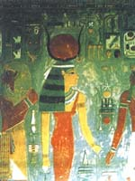

Хатхор або Хатор ("будинок Гора", тобто "небо"), в єгипетській міфології богиня неба, яка в найдавніші часи шанували як корова, яка народила сонце, дочка бога сонця Ра. Богиня радості і любові, танців і пісень, вона оберігала матерів з дітьми. Хатхор дбала про живих і проводжала померлих в підземний світ, де підкріплювала їх їжею і питвом з сикомора, дерева, в яке вона перевтілювалася. Особливо шанували богиня Хатхор в місті Дендера.
Стародавні ототожнювали Хатхор з Оком Ра. Коли Ра постарів, люди почали плести проти нього змову. Почувши про це, розгніваний бог наслав на них божественне Око, спопеляючий жар сонця.
Око прийняло образ львіноголовой Сехмет, богині війни, з якої часто ототожнюється Хатхор. Вона стала пожирати людей, і Ра припинив різанину, коли визнав, що жертв досить. Щоб покласти край безжальному вбивства, Ра просяк поле битви сумішшю пива і червоного гранатового соку з тисячі глечиків. Спрагла помсти Сехмет повірила, що це людська кров, напилася червоної рідини і знову перетворилася в красуню Хатхор.
На згадку про цю подію на щорічному святі Хатхор випивати величезні глечики пива з гранатовим соком. Богиня також є героїнею відомого міфу про що приносить весну повернення Тефнут-Хатхор з Нубії. У грецькій міфології богині Хатхор найбільш відповідає Афродіта.